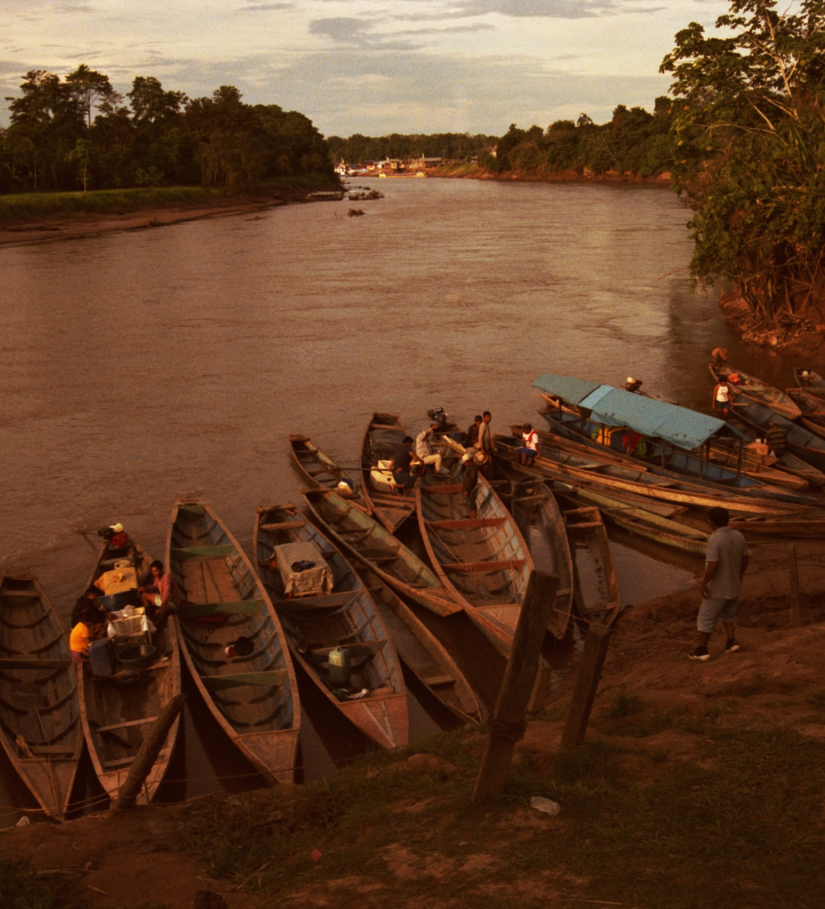
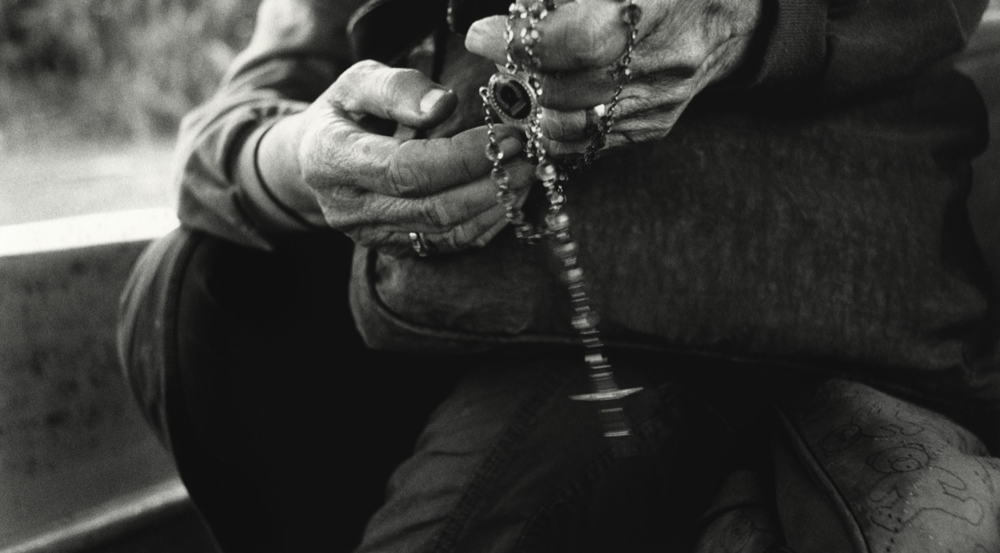

Film production company · Mexico City
In the Peruvian Amazon, a group of nuns who have devoted more than four decades to defending the land, agriculture and culture of the Shawi people now face their most intimate battle: keeping their own mission from disappearing with them.
An intimate portrait of the founders of Peru’s first lay mission — their sacrifices, their faith and their commitment to justice. The house’s first feature film: a Mexico–Spain international co-production, currently in development and financing, with the shoot planned for 2027.

